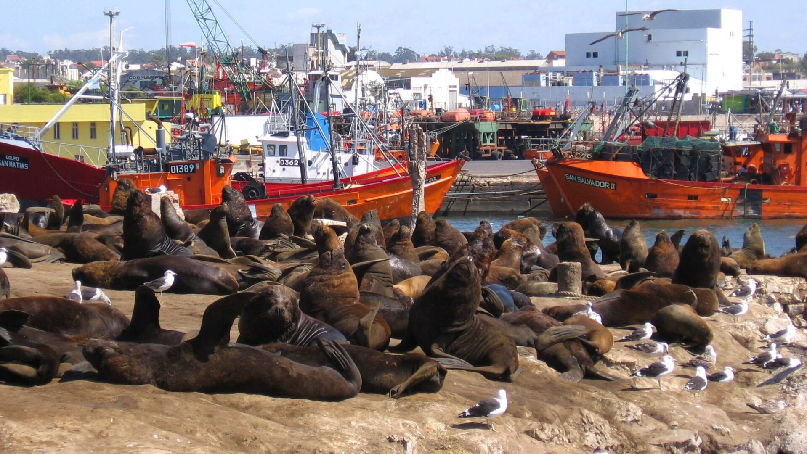

Puerto

El puerto de la ciudad de Mar del Plata se ubica en la costa de Mar del Plata, en el sudeste de la Provincia de Buenos Aires, sobre el mar Argentino del océano Atlántico Sur. Es un puerto artificial encerrado por dos importantes escolleras, la Norte y la Sur. Se empezó a diseñar a fines del siglo XIX y se inauguró en 1924. Es además puerto de ultramar.
Se encuentra dividido en dos sectores: el norte y el sur, el primero dividido en tres espigones y el segundo en un muelle para cruceros turísticos. El puerto es pesquero principalmente, el transporte de petróleo y cereales son actividades secundarias. Tiene proyectos de establecer una terminal de pasajeros y una terminal de cargas generales para competir con el puerto de la ciudad de Buenos Aires.
Además es un paseo turístico. Se puede visitar la Gruta de Lourdes, la Reserva de Lobos Marinos, la parroquia de la Sagrada Familia, el monumento al Hombre de Mar y la Av. Juan B. Justo.